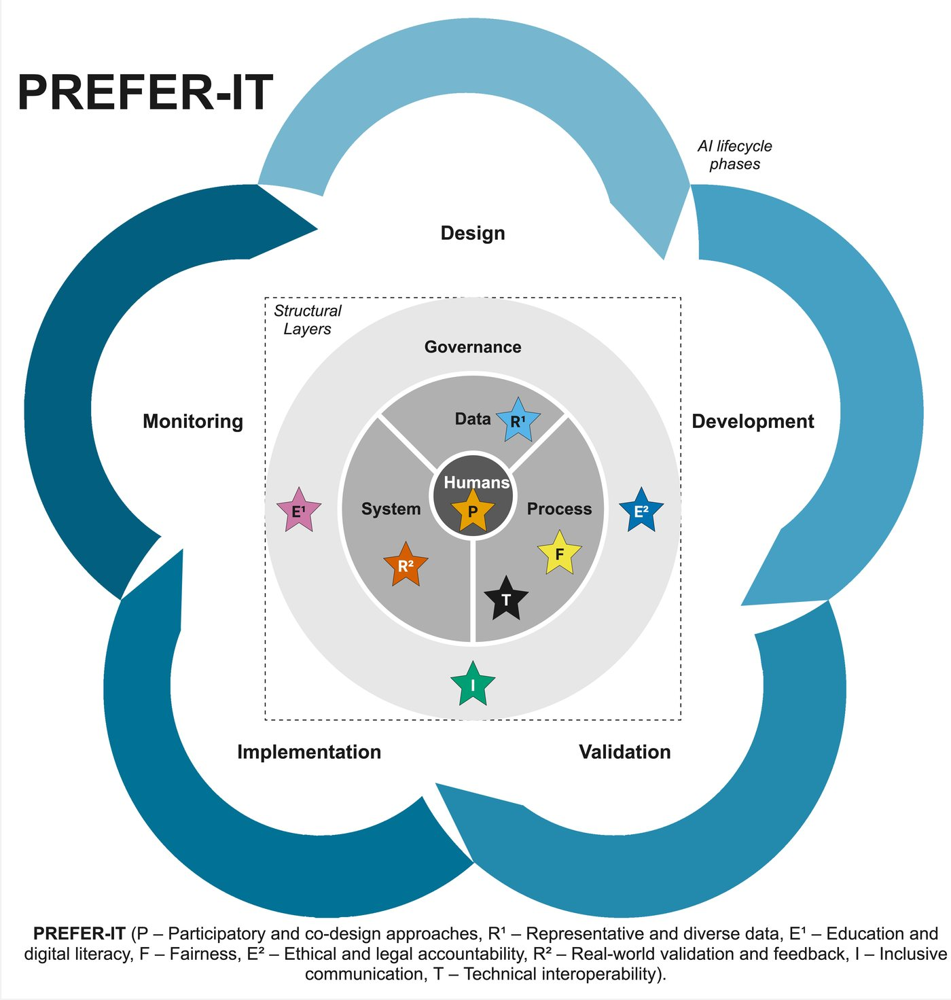
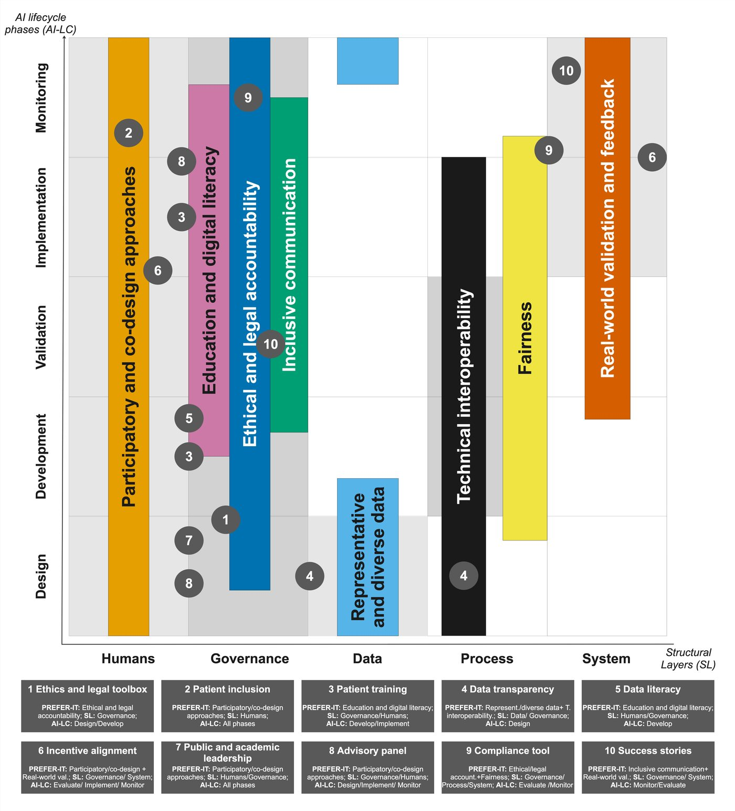

Public health physician (MD, MPH) and PhD candidate in responsible AI in health at the University Medical Center Groningen.Médica de Saúde Pública (MD, MPH) e doutoranda em IA responsável na saúde no University Medical Center Groningen.
My work examines how artificial intelligence in healthcare can be designed inclusively and governed responsibly, drawing on public health practice, participatory research and health policy.O meu trabalho analisa como a inteligência artificial na saúde pode ser concebida de forma inclusiva e governada de forma responsável, com base na prática de saúde pública, na investigação participativa e nas políticas de saúde.
I will complete my PhD at the end of 2028 and am open to positions where public health, digital health and AI governance meet, particularly roles that combine research with policy advice or strategic implementation.Concluo o doutoramento no final de 2028 e estou disponível para funções onde a saúde pública, a saúde digital e a governação da IA se cruzam, em particular as que combinam investigação com aconselhamento em políticas ou implementação estratégica.
First author of PREFER-IT, a framework for inclusive health AI co-created with 37 experts, including patient representativesPrimeira autora do PREFER-IT, um modelo para uma IA inclusiva na saúde co-criado com 37 especialistas, incluindo representantes de doentes (PLOS Digital Health, 2026).
AI governance in healthcareGovernação da IA na saúde
Research on AI regulatory sandboxes in European healthcare, including a simulation exercise at a university hospital and a realist review.Investigação sobre sandboxes regulatórias de IA na saúde na Europa, incluindo um exercício de simulação num hospital universitário e uma revisão realista.
Public health practicePrática de saúde pública
Public health specialist supporting Portugal's National Programme for Viral Hepatitis. I designed and led the Hep-ØN micro-elimination pilot for 22,000 adults.Especialista em Saúde Pública na equipa do Programa Nacional para as Hepatites Virais. Desenhei e liderei o projeto-piloto de micro-eliminação Hep-ØN, dirigido a 22 000 adultos.
Data and AI in surveillanceDados e IA na vigilância
Evaluation of AI for real-time classification of causes of death at the Directorate-General of HealthAvaliação de IA para a classificação em tempo real das causas de morte na Direção-Geral da Saúde (JMIR AI, 2023).
Current positionsFunções atuais
Since 2024Desde 2024PhD candidate, ELSA AI Lab Northern NetherlandsDoutoranda, ELSA AI Lab Northern NetherlandsUniversity Medical Center Groningen. Completion expected end of 2028.University Medical Center Groningen. Conclusão prevista no final de 2028.
Since 2024Desde 2024National Programme for Viral HepatitisPrograma Nacional para as Hepatites ViraisDirectorate-General of Health, Portugal. Public health specialist supporting the Programme Director.Direção-Geral da Saúde. Médica especialista em Saúde Pública designada para coadjuvar o Diretor do Programa.
Since 2025Desde 2025Co-coordinator, EUPHAnxtCo-coordenadora, EUPHAnxtEarly-career network of the European Public Health Association.Rede de jovens profissionais da Associação Europeia de Saúde Pública.
2026Mentor, EuroNet MRPH Mentorship ProgrammeMentora, Programa de Mentoria da EuroNet MRPHEuropean Network of Multidisciplinary Residents in Public Health.Rede Europeia de Internos Multidisciplinares de Saúde Pública.
I presented The ELSA Way on the panel “Different ELSA methods for Responsible AI in action” at theApresentei o ELSA Way no painel “Different ELSA methods for Responsible AI in action” noAI Hype, Hope and Humanity Festival, RotterdamRoterdão.
PREFER-IT, our framework for inclusive health AI, is out inO PREFER-IT, o nosso modelo para uma IA inclusiva na saúde, foi publicado naPLOS Digital Health.
My PhD follows one line of argument: from the problem of inclusion in health AI, through the methods and conditions for doing ELSA research well, to the tools that govern AI and a practical solution.O meu doutoramento segue uma linha de argumentação: do problema da inclusão na IA em saúde, passando pelos métodos e pelas condições para fazer bem investigação ELSA, até aos instrumentos que governam a IA e a uma solução prática.
WhereOndeELSA AI Lab Northern Netherlands, UMCG, University of GroningenUniversidade de GroningenWhenQuandoJuly 2024 to end of 2028julho de 2024 ao final de 2028SupervisorsOrientação Claudine Lamoth, Mirjam Plantinga, Sophie de KlerkFundingFinanciamento NWO, Dutch Research AgendaAgenda Nacional de Investigação (NWA.1332.20.006)
PREFER-IT: a co-created framework for inclusive health AIum modelo co-criado para uma IA inclusiva na saúde
Published 2026Publicado em 2026First authorPrimeira autora
Health AI tends to work best for the people best represented in its data and in the teams that build it. In February 2025 I led the Lorentz Center workshop “Inclusive Medical AI: Exploring Diverse Perspectives”, five days in which 37 people from healthcare, ethics, law, social sciences, AI and patient advocacy worked side by side. PREFER-IT was developed from that workshop. It maps eight clusters across the structural layers of AI (humans, data, process, system and governance) and the AI lifecycle.A IA na saúde tende a funcionar melhor para quem está mais bem representado nos dados e nas equipas que a constroem. Em fevereiro de 2025 liderei o workshop do Lorentz Center “Inclusive Medical AI: Exploring Diverse Perspectives”: cinco dias em que 37 pessoas da saúde, ética, direito, ciências sociais, IA e associações de doentes trabalharam lado a lado. Desse workshop resultou o PREFER-IT, que organiza oito áreas ao longo das camadas estruturais da IA (pessoas, dados, processos, sistema e governação) e do ciclo de vida da IA.
Choose a letter to see each cluster:Escolha uma letra para ver cada área:

The eight clusters sit on the structural layers of AI (humans, data, process, system and governance), surrounded by the lifecycle: design, development, validation, implementation and monitoring.As oito áreas situam-se nas camadas estruturais da IA (pessoas, dados, processos, sistema e governação), envolvidas pelo ciclo de vida: conceção, desenvolvimento, validação, implementação e monitorização.

Where each cluster applies across layers and lifecycle phases, with ten concrete solutions from the workshop, from an ethics and legal toolbox to patient training and a compliance tool.Onde cada área se aplica, por camada e fase do ciclo de vida, com dez soluções concretas do workshop, de uma caixa de ferramentas ética e legal à formação de doentes e a uma ferramenta de conformidade.
Figures fromFiguras de Pita Ferreira et al., PLOS Digital Health 2026, CC BY 4.0.
Participatory approaches for inclusive health AIAbordagens participativas para uma IA inclusiva na saúde
Manuscript in preparationManuscrito em preparaçãoShared first authorPrimeira autoria partilhada
How lived experience and stakeholder knowledge can shape AI, and what meaningful public involvement looks like in practice. I will present this work as an oral communication at the European Public Health Conference in Bilbao in November 2026.Como a experiência vivida e o conhecimento das partes interessadas podem moldar a IA, e o que é, na prática, um envolvimento público com significado. Vou apresentar este trabalho numa comunicação oral na European Public Health Conference, em Bilbau, em novembro de 2026.
Collaboration in ELSA researchColaboração na investigação ELSA
Manuscript in preparationManuscrito em preparaçãoShared first authorPrimeira autoria partilhada
The epistemic and organisational conditions that let researchers, companies, government and citizens work together on responsible AI. A qualitative study across the Dutch ELSA Labs.As condições epistémicas e organizacionais que permitem a investigadores, empresas, governo e cidadãos trabalhar em conjunto numa IA responsável. Um estudo qualitativo com os ELSA Labs dos Países Baixos.
AI regulatory sandboxes in healthcareSandboxes regulatórias de IA na saúde
In progressEm cursoFirst authorPrimeira autora
A realist review of how AI regulatory sandboxes could support responsible AI governance in European healthcare, together with a simulation exercise we ran at the UMCG. The simulation showed what a sandbox would need and what goes wrong without one.Uma revisão realista sobre a forma como as sandboxes regulatórias de IA podem apoiar uma governação responsável da IA na saúde na Europa, a par de um exercício de simulação que realizámos no UMCG. A simulação mostrou o que uma sandbox precisa e o que falha sem ela.
The ELSA Way: a protocol for a responsible AI knowledge platformprotocolo para uma plataforma de conhecimento sobre IA responsável
In progressEm cursoFirst authorPrimeira autora
An evidence-based protocol for designing and validating a community-driven handbook for responsible health AI.Um protocolo baseado em evidência para desenhar e validar um guia comunitário para uma IA responsável na saúde.
Much of what we know about the ethical, legal and societal aspects of AI is tacit, locked in academic papers or scattered across projects. The ELSA Way is a freely accessible, open handbook that captures and shares practical guidance for embedding ELSA across the whole AI lifecycle: design, development, evaluation and implementation. It starts in healthcare and is intended for all sectors.Muito do que sabemos sobre os aspetos éticos, legais e sociais da IA é tácito, fica fechado em artigos científicos ou disperso entre projetos. O ELSA Way é um guia aberto e de acesso livre que reúne orientações práticas para integrar os aspetos ELSA em todo o ciclo de vida da IA: conceção, desenvolvimento, avaliação e implementação. Começa pela saúde e destina-se a todos os setores.
Inspired by The Turing Way. Written in Markdown, published with Jupyter Book, developed on GitHub, with a citable DOI for every version. Joint work with Sophie de Klerk, Steven Warmelink, Hilbrand Oldenhuis, Claudine Lamoth and Mirjam Plantinga.Inspirado no The Turing Way. Escrito em Markdown, publicado com Jupyter Book, desenvolvido no GitHub, com um DOI citável para cada versão. Trabalho conjunto com Sophie de Klerk, Steven Warmelink, Hilbrand Oldenhuis, Claudine Lamoth e Mirjam Plantinga.
Living.Vivo.Anyone can propose additions or flag gaps, and an editorial board looks after quality.Qualquer pessoa pode propor conteúdos ou assinalar lacunas, e um conselho editorial zela pela qualidade.
Integrated.Integrado.ELSA is considered in every phase, from design to implementation.Os aspetos ELSA são considerados em todas as fases, da conceção à implementação.
Community-owned.Da comunidade.Built in the open, with a voice for researchers, developers, policymakers and the public.Construído em aberto, com voz para investigadores, quem desenvolve IA, decisores políticos e o público.
How we build itComo o construímos
1Developer surveyInquérito a quem desenvolve IACompletedConcluído
2Developer interviewsEntrevistas a quem desenvolve IAOngoingEm curso
3Stakeholder interviewsEntrevistas a partes interessadasAutumn 2026Outono de 2026
4Delphi panelPainel DelphiNext: 20 to 30 experts work towards consensusA seguir: 20 a 30 especialistas procuram consenso
Join our Delphi panelJunte-se ao nosso painel Delphi
We are looking for experts in ELSA, AI ethics, AI governance or healthcare AI development, from academia, healthcare, policy and industry. It takes two or three short online rounds and a consensus meeting.Procuramos especialistas em ELSA, ética da IA, governação da IA ou desenvolvimento de IA para a saúde, da academia, da saúde, das políticas públicas e da indústria. São duas ou três rondas online curtas e uma reunião de consenso.
p.pita.ferreira(a)umcg.nl
From COVID-19 epidemiology to inclusive health AI. Every conference abstract here was presented at a European Public Health Conference.Da epidemiologia da COVID-19 à IA inclusiva na saúde. Todos os resumos aqui listados foram apresentados numa European Public Health Conference.
Conference presentations, panels, webinars, lectures and invited talks, for audiences ranging from local health teams to European conferences.Comunicações em congressos, painéis, webinars, aulas e convites, para audiências que vão de equipas de saúde locais a congressos europeus.
Invitations to speak or teachConvites para apresentar ou ensinar
I accept invitations to speak, moderate and teach on inclusive health AI, AI governance and regulation in healthcare, AI literacy for the public health workforce, ELSA methods, and careers in public health.Aceito convites para apresentar, moderar e ensinar sobre IA inclusiva na saúde, governação e regulação da IA na saúde, literacia em IA para profissionais de saúde pública, métodos ELSA e carreiras em saúde pública.
p.pita.ferreira(a)umcg.nl
Coming upEm breve
Before the PhD, 2020 to 2024Antes do doutoramento, 2020 a 2024
As a public health resident I presented regularly in Portugal and abroad. Grouped here by type.Durante o internato de Saúde Pública apresentei regularmente em Portugal e no estrangeiro. Aqui agrupado por tipo.
I am a Portuguese medical doctor and public health specialist, with experience at local, regional and national level. My work in public health practice led to my research on AI.Sou médica e especialista em Saúde Pública, com experiência a nível local, regional e nacional. O trabalho na prática de saúde pública conduziu à minha investigação em IA.
Before the PhD: selected projectsAntes do doutoramento: projetos selecionados
Data, AI and public health practice in Portugal, 2020 to 2024.Dados, IA e prática de saúde pública em Portugal, 2020 a 2024.
Viral hepatitisHepatites virais
Hep-ØN
I designed and led a micro-elimination pilot for chronic viral hepatitis in the Oeste Norte region, reaching 22,000 adults. National news described the region as a case study for the country, and the project won a best oral communication award.Desenhei e liderei um projeto-piloto de micro-eliminação das hepatites virais crónicas no Oeste Norte, dirigido a 22 000 adultos. A imprensa nacional apresentou a região como caso de estudo para o país, e o projeto recebeu um prémio de melhor comunicação oral.
AI in surveillanceIA na vigilância
Causes of death in real timeCausas de morte em tempo real
At the Directorate-General of Health I tested a deep neural network that classifies causes of death from death certificates, and methods to detect excess mortality. This became my master's thesis and a first-author paper in JMIR AI.Na Direção-Geral da Saúde avaliei uma rede neuronal profunda que classifica causas de morte a partir dos certificados de óbito, e métodos para identificar períodos de excesso de mortalidade. Este trabalho deu origem à minha tese de mestrado e a um artigo como primeira autora na JMIR AI.
COVID-19
Pandemic responseResposta à pandemia
I worked on the local COVID-19 response in the Oeste Norte region, built a regional dashboard for the entire Lisbon and Tagus Valley region to support decisions, and contributed to studies on vaccine effectiveness and vaccine hesitancy, one of which won the Francisco George Public Health Award.Participei na resposta local à COVID-19 no Oeste Norte, construí um dashboard de apoio à decisão para toda a região de Lisboa e Vale do Tejo e contribuí para estudos sobre efetividade vacinal e hesitação vacinal, um dos quais recebeu o Prémio de Saúde Pública Francisco George.
Health planningPlaneamento em saúde
Municipal health plansPlanos municipais de saúde
With the NOVA National School of Public Health I led data analysis for health and quality of life development plans for Torres Vedras, Odivelas and Lagos, and contributed to the Digital Health Barometer.Com a Escola Nacional de Saúde Pública da NOVA liderei a análise de dados dos Planos de Desenvolvimento em Saúde e Qualidade de Vida de Torres Vedras, Odivelas e Lagos, e contribuí para o Barómetro da Saúde Digital.
ExperienceExperiência
2024 – now2024 – atualPhD candidateDoutorandaELSA AI Lab Northern Netherlands, University Medical Center Groningen
2024 – now2024 – atualNational Programme for Viral HepatitisPrograma Nacional para as Hepatites ViraisDirectorate-General of Health, Portugal. Public health specialist designated to support the Programme Director, for a three-year term from June 2024.Direção-Geral da Saúde. Médica especialista em Saúde Pública designada para coadjuvar o Diretor do Programa, por um mandato de três anos desde junho de 2024.Despacho n.º 9610/2026
2022 – 2024Consultant and researcherConsultora e investigadoraDirectorate-General of Health, Portugal. Viral hepatitis, vaccination, COVID-19 surveillance, health data analytics and AI. National collaborator for ECDC's chronic hepatitis sentinel surveillance.Direção-Geral da Saúde. Hepatites virais, vacinação, vigilância da COVID-19, análise de dados em saúde e IA. Colaboradora nacional na vigilância sentinela das hepatites crónicas do ECDC.
2020 – 2023Public health residentMédica interna de Saúde PúblicaPublic Health Unit Zé Povinho, ACES Oeste Norte, with training placements at the Directorate-General of Health and the NOVA National School of Public Health. Specialist title in 2024.Unidade de Saúde Pública Zé Povinho, ACES Oeste Norte, com estágios na Direção-Geral da Saúde e na Escola Nacional de Saúde Pública. Título de especialista em 2024.
2021 – 2023Consultant and researcherConsultora e investigadoraNOVA National School of Public Health. Municipal health planning, AI4Healthy Cities Lisbon and the Digital Health Barometer.Escola Nacional de Saúde Pública, Universidade NOVA de Lisboa. Planeamento municipal em saúde, AI4Healthy Cities Lisboa e Barómetro da Saúde Digital.
2022ConsultantConsultoraWHO Collaborating Centre for Education, Research and Evaluation of Safety and Quality in Healthcare, NOVA. Infection prevention and control at a Lisbon university hospital.Centro Colaborador da OMS para a Educação, Investigação e Avaliação da Segurança e Qualidade em Saúde, ENSP. Prevenção e controlo de infeção num centro hospitalar universitário de Lisboa.
2019General medical internshipInternato de Formação GeralCentro Hospitalar Universitário de Lisboa Central
EducationFormação académica
2024 – now2024 – atualPhD, Responsible AI in HealthDoutoramento, IA Responsável na SaúdeGraduate School of Medical Sciences, University of Groningen
2022 – 2023MPH, Master's in Public HealthMestrado em Saúde PúblicaNOVA National School of Public Health, LisbonEscola Nacional de Saúde Pública, Universidade NOVA de Lisboa
2021Public Health Specialisation CourseCurso de Especialização em Saúde PúblicaNOVA National School of Public HealthEscola Nacional de Saúde Pública
2021 – 2022Postgraduate, Information Management and Business Intelligence in HealthcarePós-graduação em Gestão de Informação e Business Intelligence na SaúdeNOVA Information Management School
2021 – 2022Postgraduate, Communication in Public HealthPós-graduação em Comunicação em Saúde PúblicaCatólica Lisbon Faculty of Human SciencesFaculdade de Ciências Humanas, Universidade Católica Portuguesa
2020 – 2021Postgraduate, Travel MedicinePós-graduação em Medicina do ViajanteInstitute of Hygiene and Tropical Medicine, NOVAInstituto de Higiene e Medicina Tropical, NOVA
2012 – 2018MD, Doctor of MedicineMestrado Integrado em MedicinaLisbon School of Medicine, University of Lisbon, and University of MadeiraFaculdade de Medicina da Universidade de Lisboa e Universidade da Madeira
Skills and methodsCompetências e métodos
Research methodsMétodos de investigação
Co-design and design thinkingCo-design e design thinking
Delphi studiesEstudos Delphi
Realist reviewRevisão realista
Thematic analysisAnálise temática
Interviews and focus groupsEntrevistas e grupos focais
Simulation exercisesExercícios de simulação
Epidemiology and surveillanceEpidemiologia e vigilância
Interrupted time seriesSéries temporais interrompidas
Spatial analysisAnálise espacial
Evaluating AI modelsAvaliação de modelos de IA
Policy and practicePolíticas e prática
AI governanceGovernação da IA
EU AI ActRegulamento Europeu da IA
Regulatory sandboxesSandboxes regulatórias
Health programme managementGestão de programas de saúde
Health planningPlaneamento em saúde
Stakeholder engagementEnvolvimento de partes interessadas
Health and risk communicationComunicação em saúde e de risco
Outbreak investigationInvestigação de surtos
Tools and languagesFerramentas e línguas
R
Python
SQL
Power BI
Power Automate
QualCoder
ATLAS.ti
Adobe Creative Suite
Portuguese (native)Português (nativo)
English (Cambridge CAE)Inglês (Cambridge CAE)
SpanishEspanhol
Basic French, Italian, DutchFrancês, italiano e neerlandês básicos
Teaching and trainingDocência e formação
Guest lectures on AI in health and the role of epidemiology, Public Health Specialisation Course, NOVA National School of Public HealthAulas convidadas sobre IA em saúde e o papel da Epidemiologia, Curso de Especialização em Saúde Pública, ENSP2022, 2023, 2025, 2026
Masterclass on the governance and implementation of AI in health, Data Science in Public Health course, NOVA National School of Public HealthMasterclass sobre governação e implementação de IA na saúde, curso de Ciência de Dados em Saúde Pública, ENSP2025
Talk for new public health residents on an academic career path, INSPIRA, ANMSPSessão para novos internos de Saúde Pública sobre o percurso académico, INSPIRA, ANMSP2025
Environmental health practice for medical students, University of LisbonPráticas em Saúde Ambiental para estudantes de Medicina, FMUL2023
“Numbers and public health” for psychology students, Universidade Católica Portuguesa“Os Números e a Saúde Pública” para estudantes de Psicologia, UCP2023
Training for primary care teams across Oeste Norte on chronic viral hepatitis and surveillanceFormação às equipas de cuidados de saúde primários do Oeste Norte sobre hepatites virais crónicas e vigilância2023
Training for primary and secondary school teachers on COVID-19 and on the use of AIFormação para professores do ensino básico e secundário sobre COVID-19 e sobre a utilização de IA
COVID-19 training for health workers, schools, businesses, restaurants, farming and civil protectionFormação sobre COVID-19 para profissionais de saúde, escolas, empresas, restauração, setor agrícola e proteção civil2020 – 2021
Organiser, Summer School Data Science and AI in Health, University of GroningenOrganização da Summer School Data Science and AI in Health, Universidade de Groningen2025
Certified trainer (Certificate of Pedagogical Competences)Formadora certificada (Certificado de Competências Pedagógicas)2020
Selected coursesCursos selecionados
Basic course on Regulations and Organisation of Clinical Trials (BROK)Curso básico de regulamentação e organização de ensaios clínicos (BROK)2025
Epidemic Intelligence, ECDC 2023
Certification of Causes of Death in Europe, European Union 2023
Geographic Information Systems for Public Health, ISPUP 2022
Field epidemiology: mass gatherings, INSAEpidemiologia de campo: eventos de massas, INSA2022
Artificial Intelligence within Biomedical Engineering and Health Systems, KTH Royal Institute of Technology 2021
Data, Visualization and Connectivity for Healthcare, EIT Digital and Coventry University 2021
Field epidemiology: outbreak investigation, INSAEpidemiologia de campo: investigação de surtos, INSA2020
Epidemiology and biostatistics in R (Epi-STAT), INSAEpidemiologia e bioestatística em R (Epi-STAT), INSA2020
Young Medical Leaders Program, Católica Lisbon School of Business & Economics 2019
Alongside my research, I hold coordinating and mentoring roles in European and Portuguese public health networks.A par da investigação, desempenho funções de coordenação e mentoria em redes de saúde pública europeias e portuguesas.
RolesCargos
Jul – Dec 2026jul. – dez. 2026Mentor, 2nd EuroNet MRPH Mentorship ProgrammeMentora, 2.º Programa de Mentoria da EuroNet MRPHEuropean Network of Multidisciplinary Residents in Public Health. I mentor two public health residents, in Spanish.Rede Europeia de Internos Multidisciplinares de Saúde Pública. Acompanho dois internos de Saúde Pública, em espanhol.euronetmrph.org
2025 – now2025 – atualCo-coordinator, EUPHAnxtCo-coordenadora, EUPHAnxtEarly-career network of the European Public Health AssociationRede de estudantes e jovens profissionais da Associação Europeia de Saúde Pública
2025Organiser, Summer School Data Science and AI in HealthOrganização, Summer School Data Science and AI in HealthUniversity of GroningenUniversidade de Groningen
Feb 2025fev. 2025Lead organiser and scientific coordinatorOrganizadora principal e coordenadora científicaLorentz Center workshop “Inclusive Medical AI: Exploring Diverse Perspectives”, LeidenWorkshop do Lorentz Center “Inclusive Medical AI: Exploring Diverse Perspectives”, LeidenWorkshop detailsDetalhes do workshop
2024 – 2025Communication Officer, Digital Healthcare CommunityResponsável de comunicação, Digital Healthcare CommunityJantina Tammes School of Digital Society, Technology and AI, University of GroningenJantina Tammes School of Digital Society, Technology and AI, Universidade de Groningen
2023 – 2025Substitute member, Lisbon Sub-Regional CouncilMembro suplente, Conselho Sub-Regional de LisboaPortuguese Medical Association (Ordem dos Médicos)Ordem dos Médicos
2021 – 2023Coordinator, Commission of Public Health ResidentsCoordenadora, Comissão de Médicos Internos de Saúde PúblicaLisbon and Tagus Valley regionRegião de Lisboa e Vale do Tejo
2021 – 2022Organising committee, National Meetings of Public Health ResidentsComissão organizadora, Encontros Nacionais de Médicos Internos de Saúde PúblicaXII and XIII editions, communication and imageXII e XIII edições, comunicação e imagem
2020 – 2022Podcast team, Saúde+PúblicaEquipa do podcast, Saúde+PúblicaPlatform of Portuguese public health residentsPlataforma dos Médicos Internos de Saúde Pública
2019Vice-President for Communication and ImageVice-Presidente da Imagem e ComunicaçãoNational Congress of General Medical InternsCongresso Nacional do Médico Interno de Formação Geral
MembershipsAssociações
EUPHAEuropean Public Health AssociationAssociação Europeia de Saúde PúblicaMember of the Digital Health and Artificial Intelligence SectionMembro da Secção de Saúde Digital e Inteligência Artificial
ANMSPPortuguese National Association of Public Health PhysiciansAssociação Nacional dos Médicos de Saúde PúblicaMember since 2019Sócia desde 2019
OMPortuguese Medical Association (Ordem dos Médicos)Ordem dos MédicosProfessional licence no. 66685Cédula profissional n.º 66685
Recognition for my work in public health.Reconhecimento pelo meu trabalho em saúde pública.
2023
Best Oral CommunicationMelhor Comunicação Oral
Study Groups Meeting of the Portuguese Association of General and Family Medicine (APMGF), for “Projeto Hep-ØN: Uma Abordagem Compreensiva para Reduzir as Hepatites Virais Crónicas em Portugal”.Encontro de Grupos de Estudo da Associação Portuguesa de Medicina Geral e Familiar (APMGF), com “Projeto Hep-ØN: Uma Abordagem Compreensiva para Reduzir as Hepatites Virais Crónicas em Portugal”.
2022
Francisco George Public Health AwardPrémio de Saúde Pública Francisco George
Portugal's Ministry of Health created this prize in 2017 to recognise original and innovative public health research with real impact. It went to our study “Spatial Analysis of Determinants of COVID-19 Vaccine Hesitancy in Portugal”, which I co-authored at the Directorate-General of Health.Prémio criado pelo Ministério da Saúde em 2017 para distinguir investigação inédita e inovadora em saúde pública, com relevância e impacto. Foi atribuído ao nosso estudo “Spatial Analysis of Determinants of COVID-19 Vaccine Hesitancy in Portugal”, de que sou coautora, realizado na Direção-Geral da Saúde.
I welcome enquiries about positions, research collaborations and invitations to speak or teach. Email is the most reliable way to reach me.Recebo com interesse contactos sobre oportunidades profissionais, colaborações de investigação e convites para apresentar ou ensinar. O email é a forma mais fiável de me contactar.